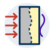
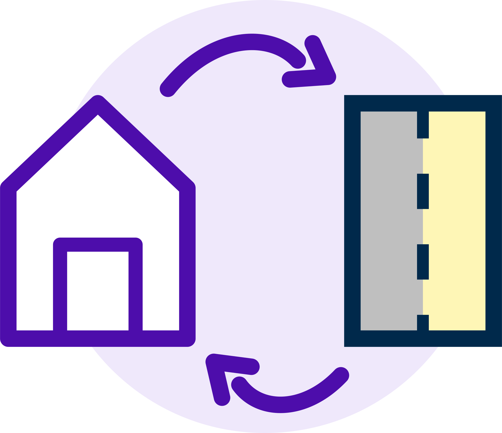
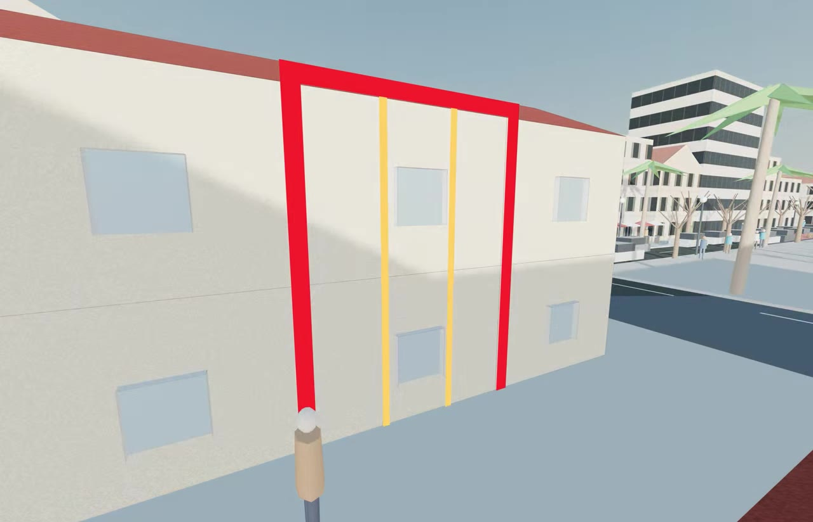
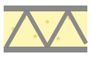
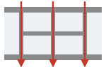
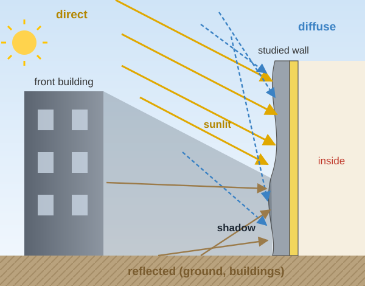
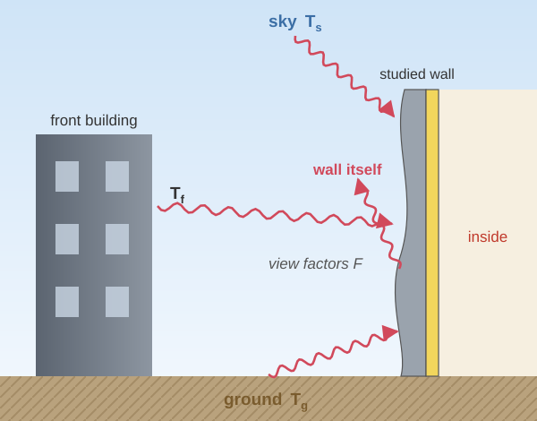

Seminar presentation - Pontifícia Universidade Católica do Paraná 20 August 2026
Shape and insulation domain optimization regarding wall energy efficiency
William DUMONTAUD
Supervisors: Julien BERGER (LaSIE) · Benjamin KADOCH (IUSTI)
I am William DUMONTAUD and I have been a PhD student since 1st November 2024 at LaSIE.
Supervisor: Julien BERGER, CNRS researcher for LaSIE, UMR 7356.
Co-Supervisor: Benjamin KADOCH, teacher-researcher for IUSTI, UMR 7343.
Funding:ANR JCJC 2023 TOPS (Optimisation topologique et de forme des parois opaques de bâtiments) project.



Sun and shadows on a street-canyon façade during one day.
Band 1 at the instant when the shadow edge crosses it; A: vertical cut.
The surrounding buildings cast moving shadows on the façade.
Sun, sky, ground and wind exchanges vary along the height and over time.
⇒ the wall is subject to heterogeneous boundary conditions in space and time.
The problem is 3D; each band is assumed uniform along its width ⇒ 2D vertical section (x, y).
Non-uniform conditions ⇒ a uniform wall does not use its material at best.
(a) Insulation domain (topology)1(b) Shape of the external face2(c) Shape & insulation domain this thesis
1 Karashbayeva et al., “Optimisation of the insulation domain for heat transfer in building wall”, 2024. 2 Alpar et al., “Shape optimization of the energy efficiency of building retrofitted facade”, 2024.
Large-scale concrete 3D printingComplex geometries at almost no extra cost: curved faces, variable thickness, internal cavities3.
On-site printing of a building (PERI printer).

Printed cavities filled with insulation
Measured U-value of a printed wall: 1.58 → 0.28 W/m²K when its cavities are filled with recycled cellulose4.
Several materials in one print
Load-bearing printed foamed concrete (λ = 0.205 W/mK) + insulating ultra-light foam in its voids (λ = 0.072 W/mK)5.

Infill geometry controls the heat flow
In printed lattice walls, the webs act as thermal bridges: their layout matters as much as the insulation6.
⇒ shape and insulation layout becomedesign variablesof the wall
3 Gosselin et al., “Large-scale 3D printing of ultra-high performance concrete – a new processing route for architects and builders”, 2016. 4 Neri et al., “Improving the energy performance of a 3D-printed wall using recycled material”, 2024. 5 Parmigiani et al., “3D-printed multi-functional foamed concrete building components: material properties, component design, and 3D printing application”, 2024. 6 Chamatete and Yalçınkaya, “Numerical evaluation on thermal performance of 3D printed concrete walls: the effects of lattice type, filament width and granular filling material”, 2024.
Material / blockcavities of bricks, blocks and printed infills
2007del Coz Díaz et al.7— hollow-brick geometries, FEM
2011Sousa et al.8— masonry units, genetic algorithm
topology / material layoutshapeparameters (thickness, position, orientation…)
At the wall scale, none of these works combines:
2D modeltransient regimespace–time boundary conditionsheat-flux continuity at the interfaceshape + insulation domain
Aim of the thesis: optimise the shape and the insulation domain of a wall, in 2D and in transient regime,
under realistic boundary conditions given by the building and its urban environment.
both depend on the position on the façade: sunlit or shaded part, what each point sees.
21 McAdams, “Heat Transmission”, 1954.


Sun patch on the façade: shading of the urban scene computed by Domus (pixel counting22).Each point of Γ1 exchanges with what it sees, weighted by its view factors.
view factors F depend on x: a curved façade also sees itself (its hollows).
22 Rocha et al., “Experimental validation and comparison of direct solar shading calculations within building energy simulation tools: polygon clipping and pixel counting techniques”, 2017.
Zh. Karashbayeva, S. Gasparin and J. Berger, Optimisation of the insulation domain for heat transfer in building wall, 11th International Conference on Inverse Problems in Engineering (ICIPE), Búzios, Brazil (2024).
S. Alpar, J. Berger, W. Mazuroski and R. Belarbi, Shape optimization of the energy efficiency of building retrofitted facade, Solar Energy 271 (2024) 112437.
C. Gosselin, R. Duballet, P. Roux, N. Gaudillière, J. Dirrenberger and P. Morel, Large-scale 3D printing of ultra-high performance concrete – a new processing route for architects and builders, Materials & Design 100 (2016) 102–109. doi:10.1016/j.matdes.2016.03.097
M. Neri, L. Licciardello, A. Reggia, M. Pilotelli and A. M. Lezzi, Improving the energy performance of a 3D-printed wall using recycled material, Journal of Physics: Conference Series 2685 (2024) 012034. doi:10.1088/1742-6596/2685/1/012034
S. Parmigiani, D. Falliano, S. Moro, G. A. Ferro and L. Restuccia, 3D-printed multi-functional foamed concrete building components: material properties, component design, and 3D printing application, Developments in the Built Environment 20 (2024) 100483. doi:10.1016/j.dibe.2024.100483
K. Chamatete and Ç. Yalçınkaya, Numerical evaluation on thermal performance of 3D printed concrete walls: the effects of lattice type, filament width and granular filling material, Buildings 14 (4) (2024) 926. doi:10.3390/buildings14040926
J. J. del Coz Díaz, P. J. García Nieto, C. Betegón Biempica and M. B. Prendes Gero, Analysis and optimization of the heat-insulating light concrete hollow brick walls design by the finite element method, Applied Thermal Engineering 27 (8-9) (2007) 1445–1456. doi:10.1016/j.applthermaleng.2006.10.010
L. C. Sousa, C. F. Castro, C. C. António and H. Sousa, Topology optimisation of masonry units from the thermal point of view using a genetic algorithm, Construction and Building Materials 25 (2011) 2254–2262.
M. Bruggi and A. Taliercio, Design of masonry blocks with enhanced thermomechanical performances by topology optimization, Construction and Building Materials 48 (2013) 424–433.
M. Sütçü, J. J. del Coz Díaz, F. P. Álvarez Rabanal, O. Gençel and S. Akkurt, Thermal performance optimization of hollow clay bricks made up of paper waste, Energy and Buildings 75 (2014) 96–108. doi:10.1016/j.enbuild.2014.02.006
M. Ozel, Effect of wall orientation on the optimum insulation thickness by using a dynamic method, Applied Energy 88 (7) (2011) 2429–2435.
O. Kaynakli, A review of the economical and optimum thermal insulation thickness for building applications, Renewable and Sustainable Energy Reviews 16 (1) (2012) 415–425.
M. Ozel, Effect of insulation location on dynamic heat-transfer characteristics of building external walls and optimization of insulation thickness, Energy and Buildings 72 (2014) 288–295.
S. Gasparin, J. Berger, D. Dutykh and N. Mendes, An innovative method to determine optimum insulation thickness based on non-uniform adaptive moving grid, Journal of the Brazilian Society of Mechanical Sciences and Engineering 41 (2019) 173. doi:10.1007/s40430-019-1670-6
G. Vantyghem, V. Boel, M. Steeman and W. De Corte, Multi-material topology optimization involving simultaneous structural and thermal analyses, Structural and Multidisciplinary Optimization (2019).
Zh. Karashbayeva, S. Gasparin and J. Berger, Optimization of the insulation domain for heat transfer in building walls, Journal of the Brazilian Society of Mechanical Sciences and Engineering (2025).
D. Tuhus-Dubrow and M. Krarti, Genetic-algorithm based approach to optimize building envelope design for residential buildings, Building and Environment 45 (7) (2010) 1574–1581. doi:10.1016/j.buildenv.2010.01.005
R. Evins, A review of computational optimisation methods applied to sustainable building design, Renewable and Sustainable Energy Reviews 22 (2013) 230–245. doi:10.1016/j.rser.2013.02.004
A.-T. Nguyen, S. Reiter and P. Rigo, A review on simulation-based optimization methods applied to building performance analysis, Applied Energy 113 (2014) 1043–1058. doi:10.1016/j.apenergy.2013.08.061
A. Ciardiello, F. Rosso, J. Dell'Olmo, V. Ciancio, M. Ferrero and F. Salata, Multi-objective approach to the optimization of shape and envelope in building energy design, Applied Energy 280 (2020) 115984. doi:10.1016/j.apenergy.2020.115984
W. H. McAdams, Heat Transmission, McGraw-Hill, New York, 3rd edition (1954).
A. P. de A. Rocha, R. C. L. F. Oliveira and N. Mendes, Experimental validation and comparison of direct solar shading calculations within building energy simulation tools: polygon clipping and pixel counting techniques, Solar Energy 158 (2017) 462–473.
G. H. dos Santos, N. Mendes and P. C. Philippi, A building corner model for hygrothermal performance and mould growth risk analyses, International Journal of Heat and Mass Transfer 52 (21-22) (2009) 4862–4872.
 PhD student since 1st November 2024 at LaSIE.
PhD student since 1st November 2024 at LaSIE.